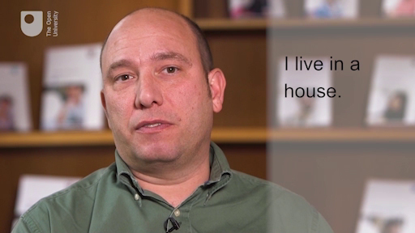

4 ‘I know what I want to communicate but I can’t write that in the language I’m learning!’¶
This is a very frustrating experience for many language learners. We are used to being able to communicate in our own language, both in speech and writing. When we are learning a language, we have a more limited range of expression and vocabulary. So while you may want to express that you live in a converted nineteenth-century Victorian house that you inherited from your grandmother, if you are a beginner you may only have the tools to write ‘I live in a big house’. You know this may not communicate as much as you would like to, or even mislead the reader, but at this stage in your language learning I would advise you to try to limit your writing to what you know how to communicate rather than what you wish you could communicate. Of course, you can take risks with guessing the necessary vocabulary and expressions to write what you want, but particularly if what you’re writing is going to be assessed it may be safer not to take too many risks. Your teacher will know what you can and cannot do at the language level you’re working at.
On the other hand, if it is not a situation where you are going to be assessed, you might want to experiment a little with your writing and stretch yourself. Writing is a creative process and because you don’t have the pressure of time to reply as you do with oral communication, you can easily reflect on what you’ve written and expand it without taking too many risks.
Watch this video about expanding your writing.
FERNANDO : Let’s look at this short sentence.; I live in a house.; Now if you had written this, you may want to expand it with more detail. So you could add an adjective. I live in an old house.; You could then add another adjective. I live in a beautiful old house.; You can then add information about location. I live in a beautiful old house by the sea.; And keep adding information about who you live with. I live in a beautiful old house by the sea with my family.; |
 The type of words that have been added to the original sentence are fairly common words when you’re learning a language, so while you’re taking a risk in adding words, you’re not attempting something much more advanced such as: ‘I live in a house where my grandmother used to live’. That addition includes a subordinate clause which incorporates a past tense, and it may be too ambitious for your language level if you have not learned how to talk about the past yet.
Activity 5 Having a go at expanding the sentence yourself¶
Timing: Allow about 10 minutes
Question¶
Write the first sentence we provided in the language you’re learning. Then try to expand it with the additional words we included in the example or similar.
I live in a house.
Discussion¶
In the process of expanding your writing you may have had to consider a number of things depending on which language you’re learning. Perhaps you needed to consider whether the adjective you were adding had to agree with the noun in gender and number. Trying to write ‘by the sea’ may have been more challenging as other languages may use an expression such as ‘near the sea’. You should also have thought about word order.
If you have time, a very useful thing you can do when writing is to put what you’ve written away and look at it again later. As you look at it with fresh eyes, you will have the opportunity to question what you wrote and check your work. For example, the sentence above says ‘a very useful thing you can do…’ Such a sentence could be improved by changing ‘thing’ to a more precise word, such as ‘activity’. Similarly, you could change the overused word ‘do’ for something like ‘undertake’. So from a relatively simple set of words such as ‘a very useful thing you can do’ you can be more precise and stylish by writing ‘a very useful activity you can undertake’
Laura says:¶
I have kept a lot of my old open-ended writing exercises and then gone back to them a few weeks or months later, to see what I could have improved or expanded upon when I learned new tenses or grammar points. It is also quite encouraging to look back and see how much you improve over the course of a few weeks or months.